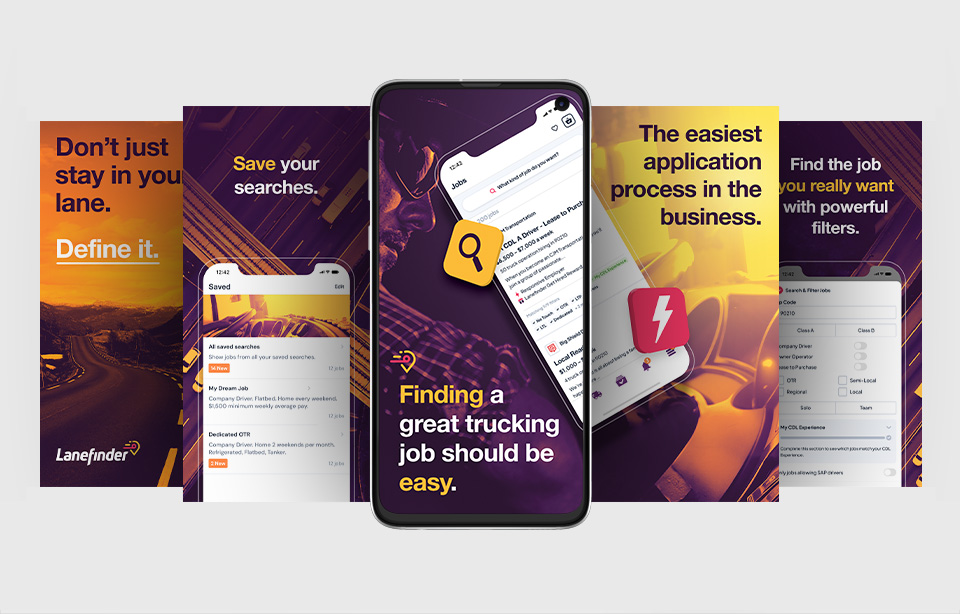
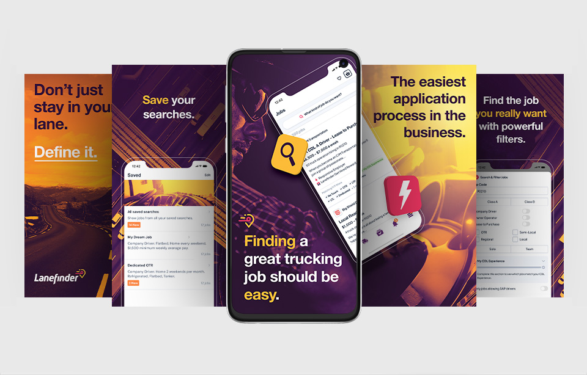
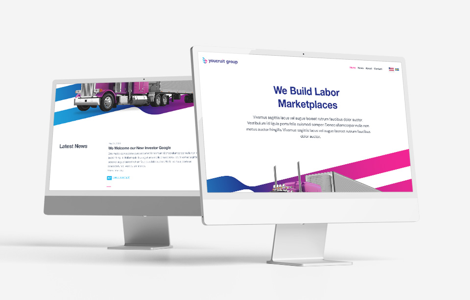
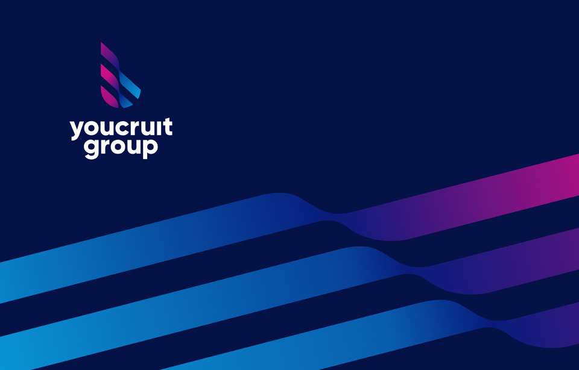
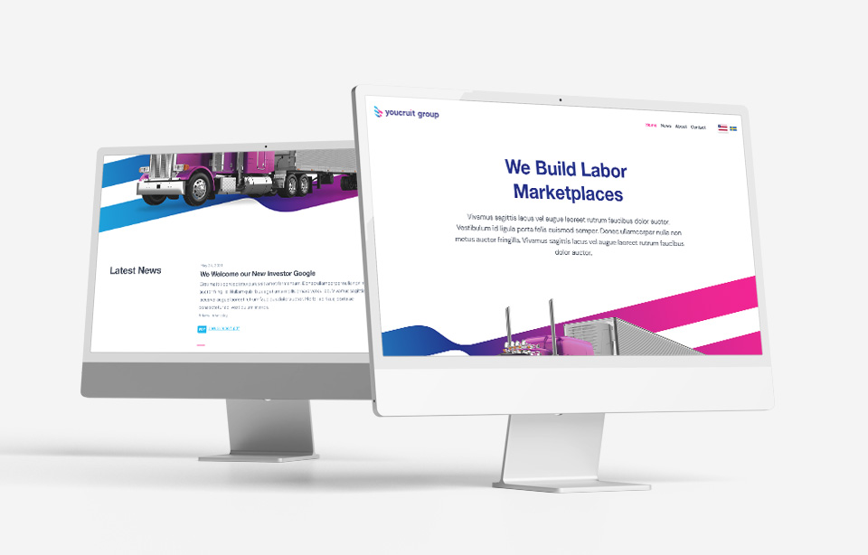
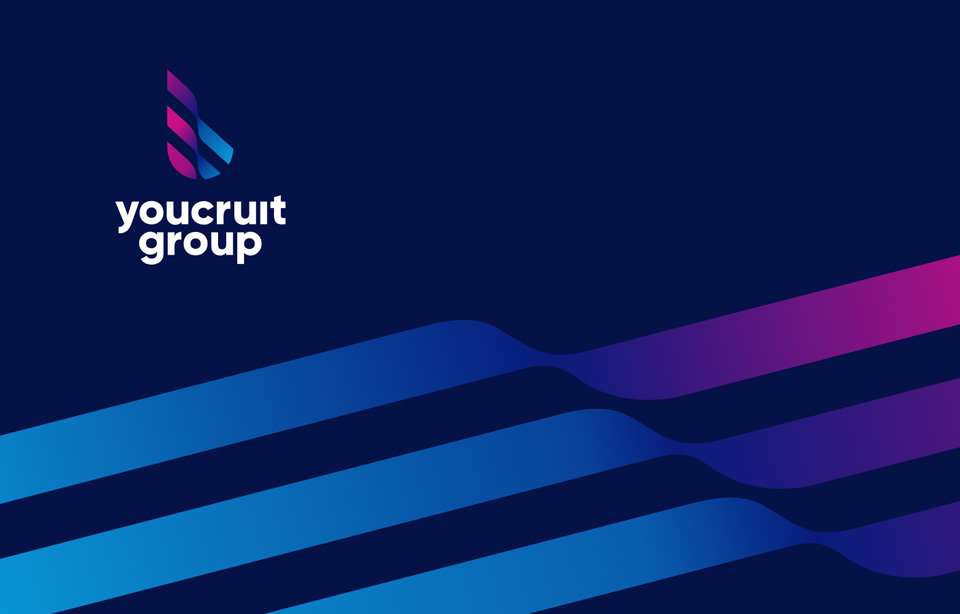

Lanefinder
Truck Driver Recruitment
Lanefinder is aimed towards truckers in the trucking industry with over 5,000+ jobs and 7,000+ customers advertising on this platform, achieved within just two years.
I designed the visual expression of this brand and have been the Art Director for every product that stem from Lanefinder. Market material, the app, the website and much more. Since Lanefinder is a new player on the market I wanted the brand to convey attitude and uniqueness, hence the slighly more feminine color scheme. I also took inspiration from road signage to work with the colors in a similar way. Clarity, uniqueness and attitude was the feel I went for.


 


YouCruit
Design & Geophrey the Mascot
Creating design, videography, explainers, logos and much more for YouCruit, an ATS that began as a Swedish Applicant Tracking System but today have branched out to the US and specializing in logistics companies.
However, the YouCruit brand needed a more substantial nudge in branding, so I came up with Geophrey. Which is a robot meant to symbolise to the underlying artifical intelligence of the system, while introducing some charm and make the brand more rememberable.
Also, he can complement every idea by the clothes I put on him. He's been in explainer videos, animated iconography and much more.

 



Peter Lindström
CD Cover and Promotional Photography
On behalf of the singer/songwriter Peter Lindström I created promotional photography and a CD cover that later became the theme music for Växjö Lakers.


Brainteam
Freelance Branding
This is not an official project, but instead a friend called me as she was applying to a web design position. As she told me the brief, this is what popped into my mind. Within 24 hours I've created an entire brand and had a blast doing it.
She got hired, and the company contacted me and purchased the entire branding I've layed up.


BetCreative
Branding of a Betting Company

Like Brothers
Book Cover
A romance book written by Ola Hasselgren, I designed a book cover to encapsulate the drama between the two characters. A romantic drama where one of the characters is a pilot.

Sveriges Television
Motion Graphics Showreel
Worked as a Motion Designer for SVT, the public broadcaster of Sweden, and this is a showreel of some of my works there. But be kind, this was a long time ago and I have grown substantially since.
However, with that said, my work has been seen by millions. And I have exceptional pride in creating the idea for "På Spåret" where I wanted to create an intro based on toy trains, but at the same time making it as realistic as possible. My original intro has since been replaced, but to this day my idea was followed by other graphic artists and to day remiains intact I believe.
Continuum
Branding Concept
A private project with the framing of a gaming company, where I wanted to create a brand named "Continuum". It's entirely fictional, but something I enjoyed creating.


Luna
Branding Concept
Personal experimentation, made just because I loved the process.

MikaelCedergren.com
Branding Concept
My own branding, based on my own artistic vein. I've always had a fascination of the coat of arms and detailed logos are just too much fun - so that's what I decided to create.


Bubbloo
Game Concept
Wanted to see if I had it in me to create something more over the top playful.

Batman
Unofficial Tribute Trailer
I've always have had a passion for trailers, so with limited material I gave it a go. Learn as you go kinda approach. This is my first ever trailer, not in any sense perfect, but a good first try.